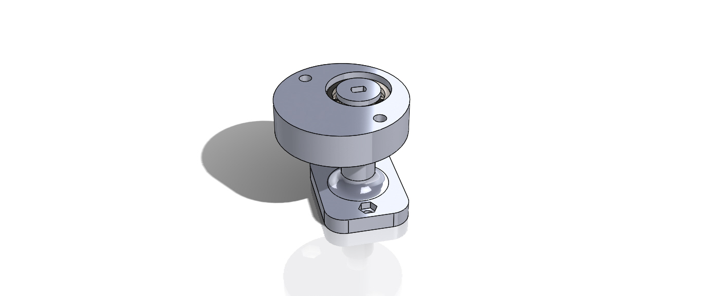

Gimbal
Description
A motorized gimbal that operates using stepper rather than brushless DC motors. The motorized gimbal can achieve more stable shot than one lacking the motors. Moreover, it has the capability to manipulate the phone’s orientation without the need of any manual adjustments.
Part used for testing the capability of the motor
Objective
To design a motorized phone gimbal using 5V stepper motors that provides accurate stabilization for captured shots.
Tasks
Completed
- Research the gimbal mechanism and designs.
- Select the actuators and electrical components needed to complete the project.
- Test the actuators capability and limitations.
- Anticipate future challenges and the methods that will be used to resolve them.
Ongoing tasks
- Sketch the first draft of the prototype taking into consideration the electrical components’ placement.
- Design the prototype.
- 3D print the components of the prototype.
- Program the microcontroller to perform the required operation.
- Assemble the 3D printed and electrical parts.
- Test the operation of the prototype.